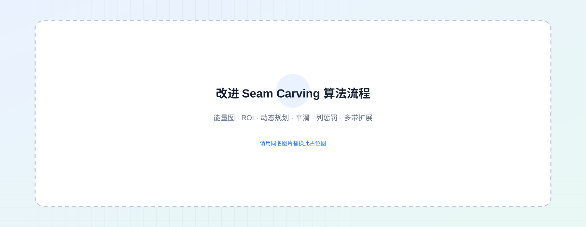
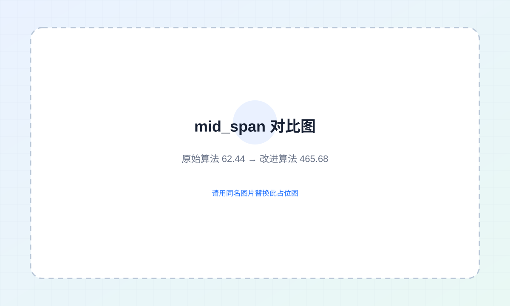

单一列被 seam 反复经过的最大次数明显降低。
seam 在图像宽度方向上的分布范围显著扩大。
从 BSDS500 中人工选取人物、动物、建筑和自然场景样本。
01 · OVERVIEW
为什么需要内容感知拉伸？
普通非等比缩放会均匀改变所有像素的位置，容易导致人脸、身体、建筑等重要结构被压扁或拉长。 Seam Carving 根据图像能量选择低重要度路径，对图像尺寸进行内容感知调整。
传统拉伸的局限
统一缩放无法区分主体和背景，重要目标与低纹理区域会被同时拉伸，导致明显几何畸变。
原始 Seam Carving 的问题
在连续插入 seam 时，算法可能反复选择少数低能量列，形成局部过度拉伸、条纹伪影和结构破坏。
本项目的目标
让新增像素更均匀地分布在多个低重要度区域，同时显式保护人物、建筑等关键内容。
02 · METHOD
算法流程与四项改进
基础流程由 Sobel 能量计算、动态规划寻找最小能量 seam、路径插入组成； 在此基础上，通过四个模块提升扩展质量。

ROI 区域保护
对人物面部、衣物、建筑等重要区域施加更高能量，使 seam 更难穿过关键内容。
E'(x,y) = E(x,y) + λ · MROI(x,y)
Seam 路径平滑
通过平滑窗口约束路径变化，减轻像素插入后出现的不连续、突兀边缘和锯齿感。
s' = Smooth(s, window)
列惩罚机制
每次插入后提高已频繁经过列的代价，避免 seam 长期聚集于同一位置。
E'' = E' + α · Pcolumn
多带扩展
在多个低能量区域之间分散选择 seam，使大幅横向扩展时的新增像素分布更加均匀。
B = {s₁, s₂, …, sk}
03 · EXPERIMENTS
实验设置与定量结果
对 25 张 mini-BSDS500 图像统一进行水平扩展，宽度增加 80 像素； 对比普通非等比线性拉伸、原始 Seam Carving 和本文改进方法。
人物、动物、建筑、自然场景
统一参数条件
高度保持不变
集中程度 / 分布跨度

| 方法 | mid_maxfreq ↓ | mid_span ↑ | 视觉表现 |
|---|---|---|---|
| 原始 Seam Carving | 19.92 | 62.44 | 易产生局部过度拉伸与条纹伪影 |
| 本文改进方法 | 5.52 | 465.68 | 主体结构更完整，扩展区域更自然 |
04 · VISUAL RESULTS
定性对比与消融实验
建议优先展示论文中主体明显、对比强烈的案例，并保持每组图片的排列顺序一致。
05 · ROADMAP
总结与未来工作
本项目验证了能量加权与路径分布约束对内容保持型图像扩展的有效性， 未来可继续提升自动化程度、适用范围和计算效率。
视频内容保持拉伸
引入时序一致性约束，避免视频帧间出现 seam 跳变和闪烁。
自动 ROI 生成
结合目标检测或语义分割模型，自动识别人脸、人物和关键建筑区域。
多方向与多尺度扩展
从横向扩展推广到纵向、多方向及更复杂比例的图像尺寸调整。
GPU 与实时优化
通过并行计算、近似搜索和 GPU 加速降低高分辨率图像的处理开销。